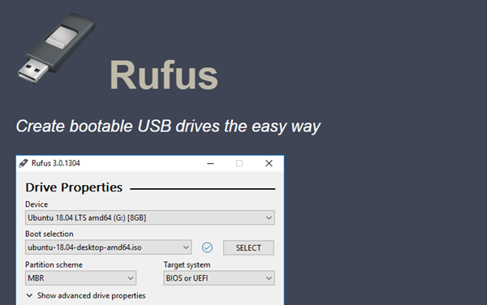
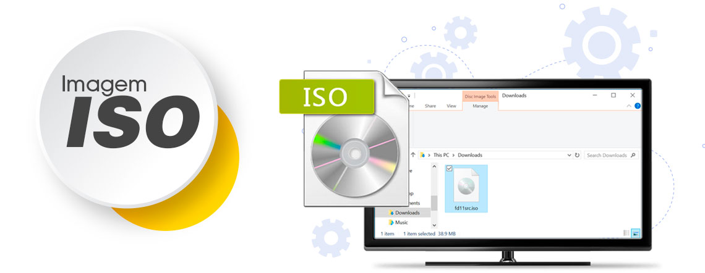

1) Baixar uo SoftWare chamado: RUFUS

Clique na imagem para fazer o download...

Clique na Imagem para fazer download de alguma imagem ISO para Pcs Fracos
Caso queira uma Imagem de ISO Completa, Vá até o Site da Microsoft